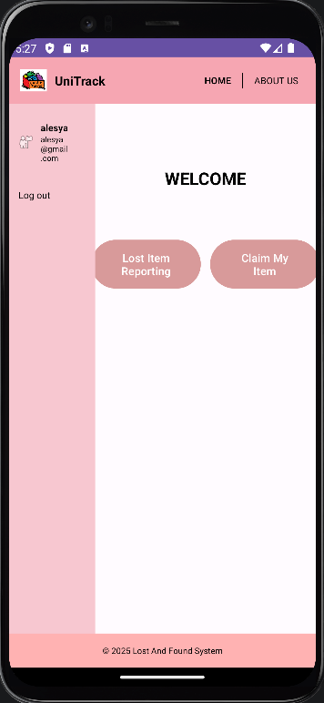
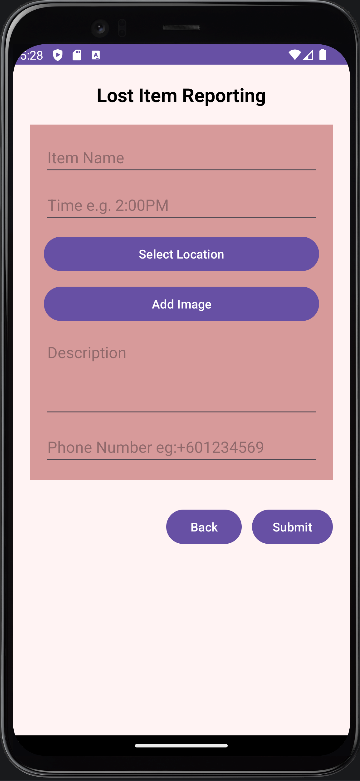
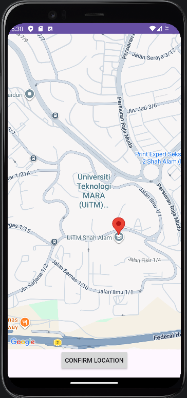
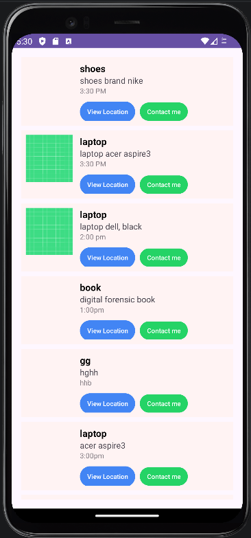

UniTrack : Lost and Found System





This is my ICT602 project, UniTrack, a lost-and-found system that allows students to report missing items or claim found ones.
← Back to Projects




This is my ICT602 project, UniTrack, a lost-and-found system that allows students to report missing items or claim found ones.
← Back to Projects